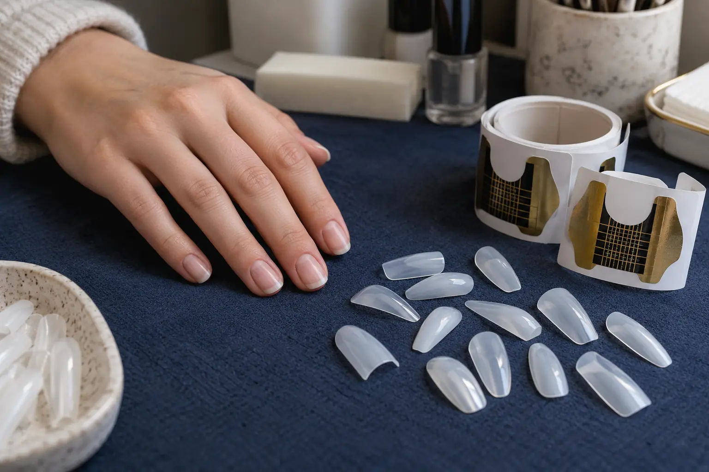

Nagų priauginimo formos ir tipsai: ką reiškia paslaugos metodas?
Autorius: Madbeauty redakcija · Numatyta 2026 m. gruodžio 16 d. 10:00 (Lietuvos laiku)
Sužinokite, kuo priauginimo forma skiriasi nuo tipso, ką atskirai reiškia medžiaga ir apdaila, ir kaip palyginti paslaugų meniu.

Priauginant forma yra atrama, naudojama modeliuojant papildomą ilgį; tipsas – atskirai suformuotas elementas, naudojamas nagui pailginti. Tai skirtingi ilgio kūrimo būdai. Jų pavadinimai savaime nepasako, kokia medžiaga, siluetas, apdaila ar papildomi darbai įeina į paslaugą.
Atrama ir antgalis: kuo skiriasi metodai?
CND „Future Forms“ pavyzdyje priauginimo forma pritaikoma po laisvu nago kraštu ir naudojama kaip atrama modeliuojant ilgį. Tai nėra tas pats, kas iš anksto suformuotas, visą nago plokštelę dengiantis antgalis. Aprašymas nusako šios konkrečios formos paskirtį, o ne universalią kiekvienos sistemos instrukciją. CND formų pavyzdys.
„Gelish Soft Gel Tips Stiletto Medium“ yra vienas konkretus tipso pavyzdys: iš anksto suformuotas, visą nagą dengiantis minkšto gelio tipsas su tai sistemai skirtu LED šviesa kietinamu klijumi. Tai šio produkto aprašymas, ne visų tipsų savybė. „Gelish“ produkto aprašymas.
Atskirkite ilgio kūrimą, medžiagą ir galutinį vaizdą
Meniu perskaityti lengviau, jei jo sąvokas išskaidote į tris dalis. Priauginimo būdas nurodo, kaip kuriamas ilgis; medžiaga ir konkreti sistema apibūdina, kas naudojama; siluetas bei apdaila nusako norimą vaizdą. Žodis „forma“ kartais reiškia ir atramą priauginimui, ir nago siluetą, todėl verta žiūrėti į visą paslaugos aprašymą.
- Ilgio kūrimas: ar aprašyme nurodyta forma, ar konkretus tipso tipas?
- Medžiaga ir sistema: kokia medžiaga ar produktų sistema įvardyta? Vien žodis „gelinis“ dar nepasako, ar kalbama apie dangą, ar apie konkrečią priauginimo sistemą.
- Rezultatas ir apimtis: koks ilgis bei siluetas numatyti, kokia apdaila pasirenkama, ar įskaičiuotas seno padengimo nuėmimas ir korekcija?
Gelinio manikiūro aprašyme gali būti kalbama apie dangą ir jos kietinimą UV šviesa. Todėl vien „gelinis lakavimas“ neatsako, kokiu būdu kuriamas papildomas ilgis. Amerikos dermatologų akademijos paaiškinimas apie gelinį manikiūrą.
Kaip palyginti realius pasiūlymus?
Palyginkite tas pačias paslaugos dalis abiejuose meniu: ilgio kūrimo būdą, aprašytą medžiagą ar sistemą, norimą siluetą, apdailą, nuėmimą ir korekciją. Jei kuri nors dalis nenurodyta, paprašykite patikslinti būtent ją. Vien metodo pavadinimo nepakanka nuspręsti, kuris pasiūlymas geriau atitinka jūsų tikslą.
Konkretus kainyno pavyzdys parodo, kodėl svarbu sulyginti paslaugos apimtį: 2026 m. spalio 9 d. „Vili Nails“ meniu aparatiniam manikiūrui su geliniu lakavimu nurodė vienspalvį, prancūzišką ar ombre variantą be nuėmimo už 43 Eur ir 70 min.; su nuėmimu – už 45 Eur ir 80 min. „Maxi“ dailė nurodyta atskirai: be nuėmimo 46 Eur ir 80 min., su nuėmimu 50 Eur ir 90 min. Tai gelinio lakavimo, o ne priauginimo formomis ar tipsais kainos. Šie skaičiai apibūdina vieną datuotą meniu, ne Lietuvos kainų vidurkį. Peržiūrėti „Vili Nails“ meniu.
Jei anksčiau kilo reakcija į nagų kosmetikos produktą, prieš vizitą pasakykite apie ją teikėjui ir pasiteiraukite, kokia sistema numatyta. Nagų kosmetikos produktai gali sukelti alerginę reakciją; jos priežastį ir vertinimą palikite sveikatos specialistui. DermNet informacija apie nagų kosmetikos alergiją.
Procedūrų aprašai kataloge: Priauginimas ir korekcija. Miestą ir realaus teikėjo pasiūlymą pasirinkite kataloge, kai tokia pasiūla pateikta.
Susiję gidai
Šaltiniai
- Vili Nails · realių paslaugų variantai · www.treatwell.lt
- Fresha · užsienio gelinių nagų pasiūlymai · www.fresha.com
- AAD · gelinis manikiūras · www.aad.org
- DermNet · nagų kosmetikos alergija · dermnetnz.org
- Gelish: iš anksto suformuoti Soft Gel tipsai · gelish.com
- CND: priauginimo formos paskirtis · cdn.shopify.com